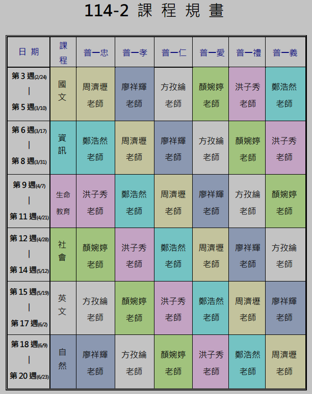

課程授課採週期主題設計，每三週輪換授課班級。
風城走讀_行動博學家_資訊單元，援引Bebras國際運算思維挑戰賽範例，引導學生思考能力，運用計算和計算機科學的概念、方法、技術、和邏輯推理來解決各類領域包括日常生活內的問題。
--系統平台簡介、電腦硬體
--作業系統運作
--系統平台發展趨勢
--演算法表示方法
--常用演算法
--程式設計概念
--結構化程式設計
--數位共創工具、雲端硬碟、雲端日曆
--雲端辦公室軟體、AI工具
-- 資料庫導論
--ACCESS介紹與基本操作
--建立與管理資料庫
--建立資料表
--資料表操作
--資料表關聯
--建立與管理查詢
--進階查詢應用與動作查詢
--建立與管理表單
--報表應用
--巢狀迴圈結構、變更迴圈執行流程break、continue、else
--陣列概念，一維陣列、二維陣列
--函式定義與呼叫、變數作用範圍
--內建函式與標準函式庫
--遞迴概念、遞迴函式結構
--資料容器，Tuple、list、dict、set
--模組與套件
--巨集概念與種類
--巨集物件、巨集指令、建立與編輯
--獨立式巨集
--嵌入式巨集、控制項工具
--事件驅動資料巨集
--具名資料巨集、呼叫具名資料巨集
--網際網路簡介
--應用層、傳輸層、網路層、資料連結層、實體層
--程式循序結構、選擇結構、重複結構
--資料表示、處理、分析
--認識著作權、著作權合理使用
--創用CC授權、開放原始碼
--資訊隱私權、個人資料保護法
--APP Inventor 2 與 Android 程式設計基礎
--APP Inventor 2 使用者圖形化介面設計
--APP Inventor 2 物件導向程式設計
--使用者互動設計、選擇與圖像設計
--訊息與對話框、清單與清單組件
--多畫面設計、日期/時間組件
--啟動應用程式、網路及地圖組件
--綜合應用，語音
--綜合應用，遊戲設計
課程援引程式競賽題目解析問題內容，學習者了解如何透過執行程式方案來尋求最佳解答。
學習者思考解決程序及方案，導學者提示程式方案應注意事項。
撰寫程式Python程式語言，學習者透過程式綜合實作尋求問題最佳解答。
--數字翻轉
--hello
--字串處理
--IPv4地址轉換
--電話客服中心
--質因數之和
--三角形
--眾數
--Fibonacci費氏數列
--...
課程授課採週期主題設計，每三週輪換授課班級。
-- 第一週：眼見不一定為憑 (eliteracy中小學數位素養教育資源網
--第二週：生活中的假訊息 (eliteracy中小學數位素養教育資源網
--第三週：刪除不了的回憶 (eliteracy中小學數位素養教育資源網
授課輔助非同步線上教學平台：教育部因材網

網路封包解析與通訊協定入門
----網際網路基礎：封包的定義與原理
----封包結構剖析：標頭(Header)與裝載(Payload)
----基礎通訊協定：IP與TCP的協作
----網際網路電話簿：DNS解析流程
----網頁內容傳輸：HTTP協定詳解
----安全傳輸保障：TLS加密技術